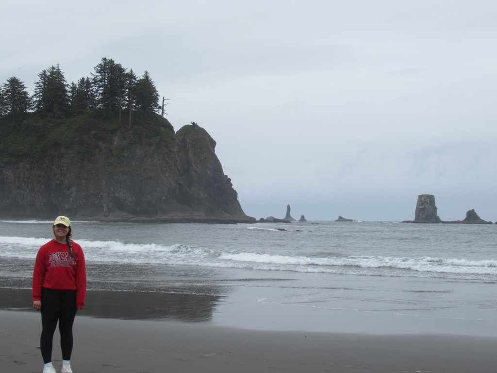

I love the ocean! My favorite part about the ocean is the different animals that exist within its ecosystem.

This picture is from Second Beach on the coast of Washington.The tidepools were home to anemones and starfish.There were a lot of people trying to find other sea creatures.
Built by Kate G · BMIS 235